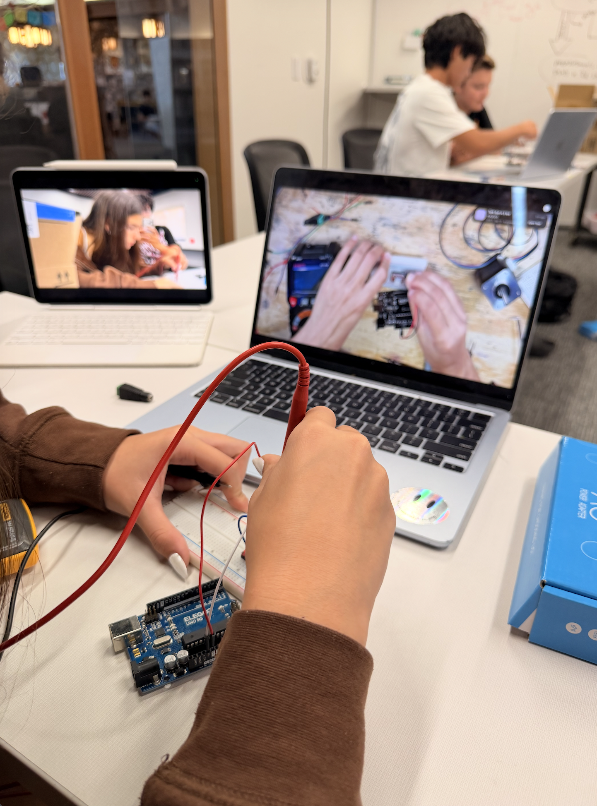
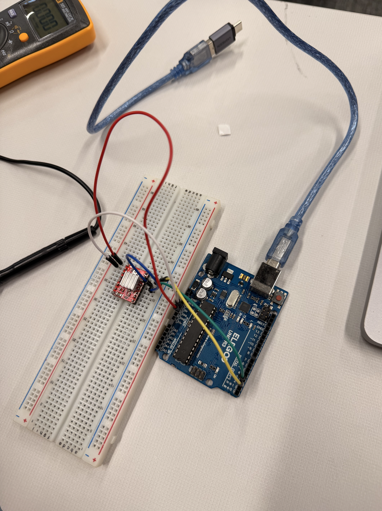
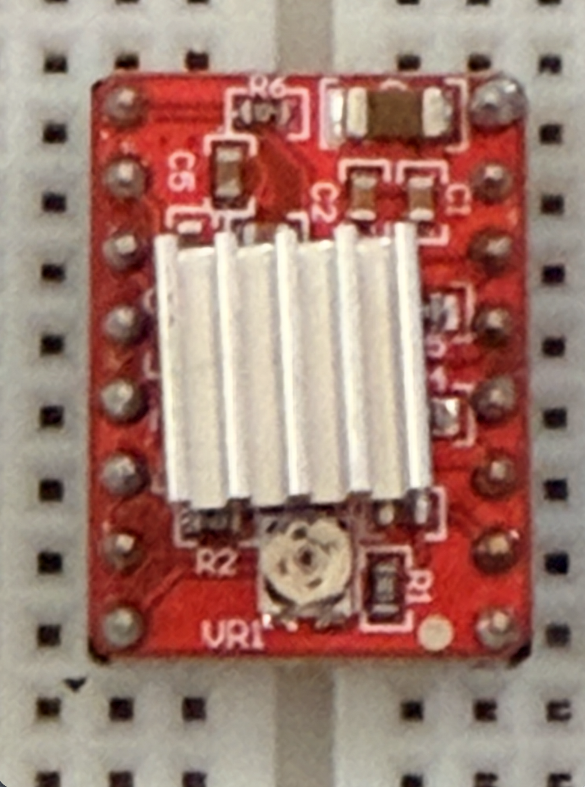
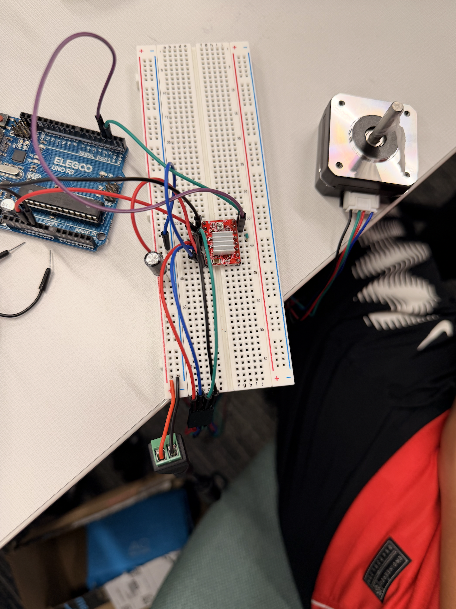
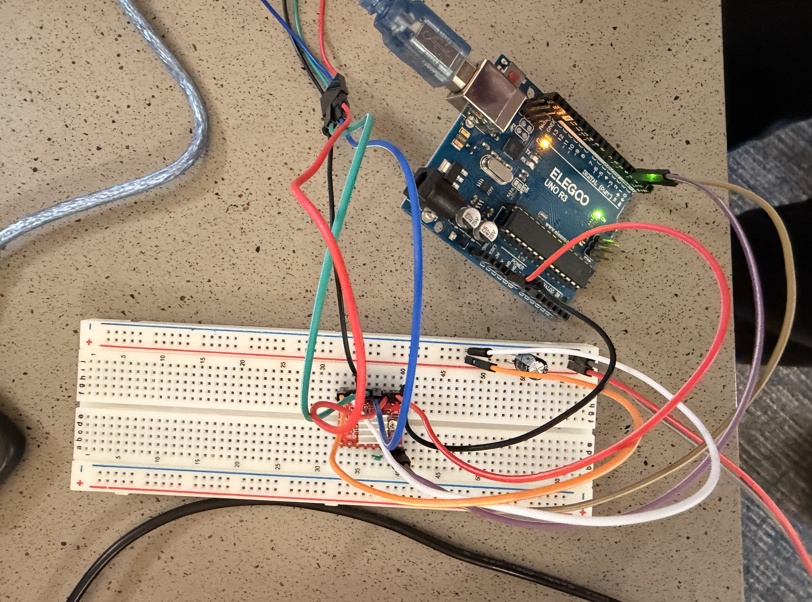
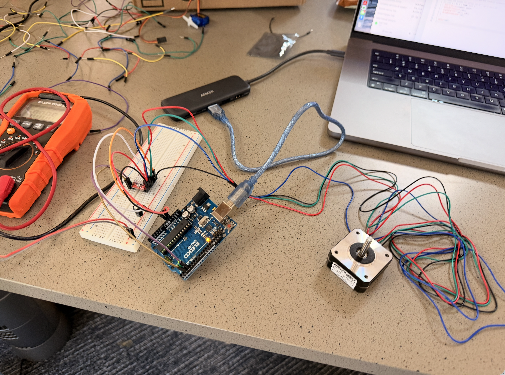
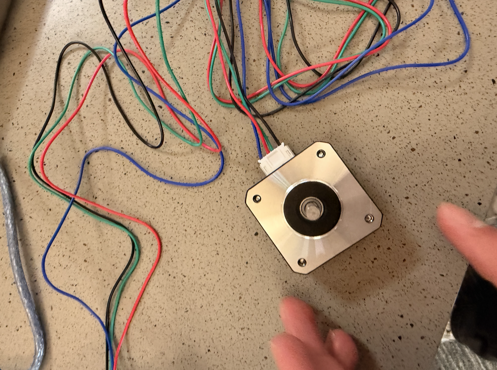

Stepper Motor Project
Innovator Journal | Unit 2
Project Overview
For this project, Ava and I worked on setting up and controlling a stepper motor using an Arduino, a breadboard, and an A4988 motor driver. We followed a tutorial to learn how the different components connected and worked together. Our goal was to build a working circuit that could make the stepper motor move.
1. Initial Setup

We started by following a tutorial and assembling the different parts of the circuit. We had to figure out where each component belonged and how to connect everything correctly.

This was our first attempt at wiring the circuit. Since there were several components and connections to keep track of, it was important to pay attention to the tutorial and make sure the wires were in the correct places.

The A4988 driver is an important part of the circuit because it controls the electrical signals sent to the stepper motor. The heatsink helps dissipate heat from the driver while it operates.
2. Troubleshooting Our Circuit
After our first attempt, we realized that our circuit was not working because we had made mistakes in the wiring. We needed to figure out what went wrong instead of continuing with a setup that did not work.

We looked at John Deng and Ryan's working setup to compare it with ours and get a better understanding of the connections. After realizing that we had wired our circuit incorrectly, we decided to take apart our original setup and start over. This gave us a chance to rebuild it more carefully rather than keep guessing what was wrong.
3. Getting Help During Office Hours

During office hours, Dr. Dzula helped me understand how the breadboard connections worked and how to wire the circuit correctly. Instead of only trying random changes, I was able to learn more about where the connections needed to go and how the different parts of the circuit worked together.

After about an hour of work, I finally had a working setup. With Dr. Dzula's help, I was able to correct the wiring and better understand how the breadboard and driver were being used in the circuit.
4. Final Result

Seeing the stepper motor finally move showed that the circuit was working. This was the result of rebuilding the setup, correcting our mistakes, and getting help to understand the wiring.
5. What I Learned
One of the biggest things I learned was how a breadboard actually works. I learned that the breadboard has separate connected sections, and that the holes are not all connected to each other. Some connections need to be made using wires to link different sections together. Understanding this made it easier to see why placing a wire in the wrong row could stop the entire circuit from working.
I also learned more about the A4988 driver. The Arduino can send control signals, but the driver helps control the electrical current going to the stepper motor coils so the motor can move in steps. This helped me understand that each component has a specific job and that they all need to work together.
Another important lesson was how much accurate wiring matters. Even if all the correct components are being used, the circuit will not work if the connections are wrong. When our first setup failed, comparing it with a working example and asking Dr. Dzula for help taught me to troubleshoot systematically instead of just guessing.
I also learned that taking something apart and starting over can be a useful part of the engineering process. At first, our circuit not working was frustrating, but rebuilding it helped me understand the connections better. I learned that asking for help, observing other people's designs, and understanding why a solution works are more useful than simply copying the final result.
Overall, this project helped me become more confident with breadboards, motor drivers, and electronic circuits. Most importantly, I learned that getting a project to work is not just about following instructions. It is also about understanding the system, finding mistakes, and learning from the process.